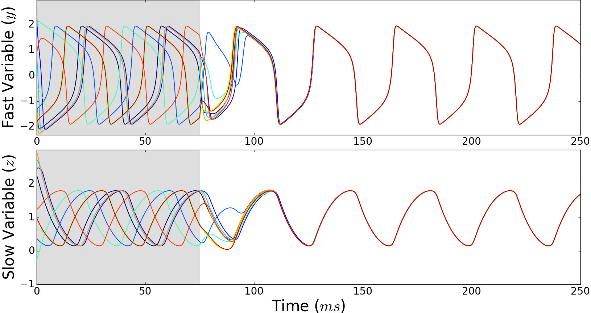
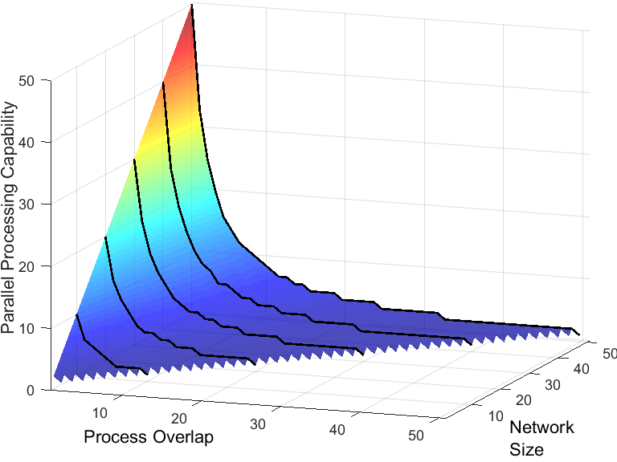
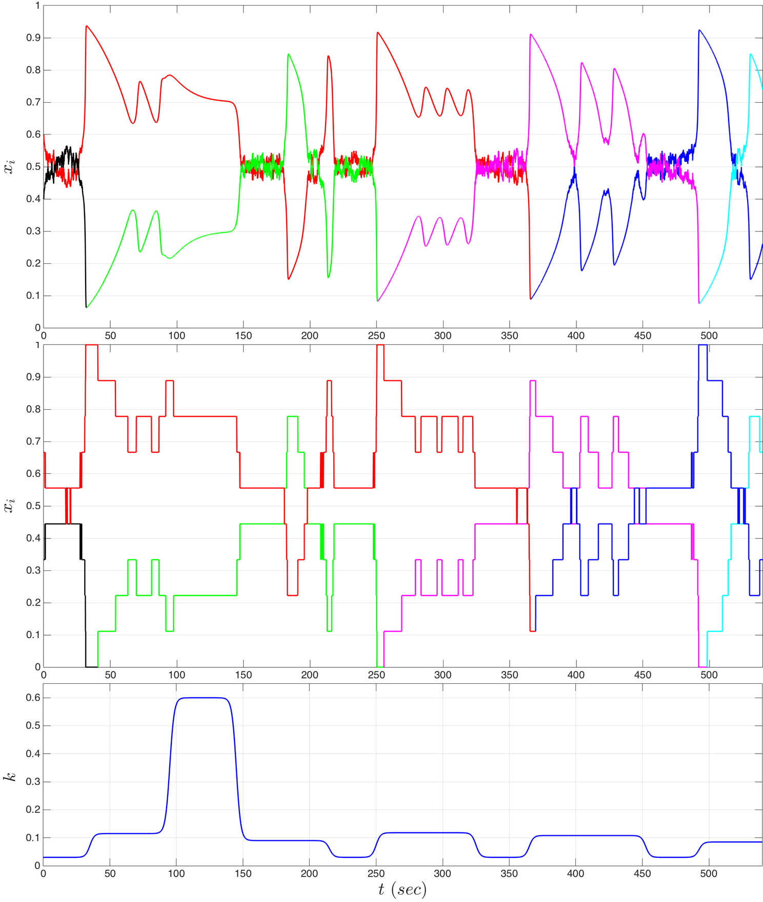
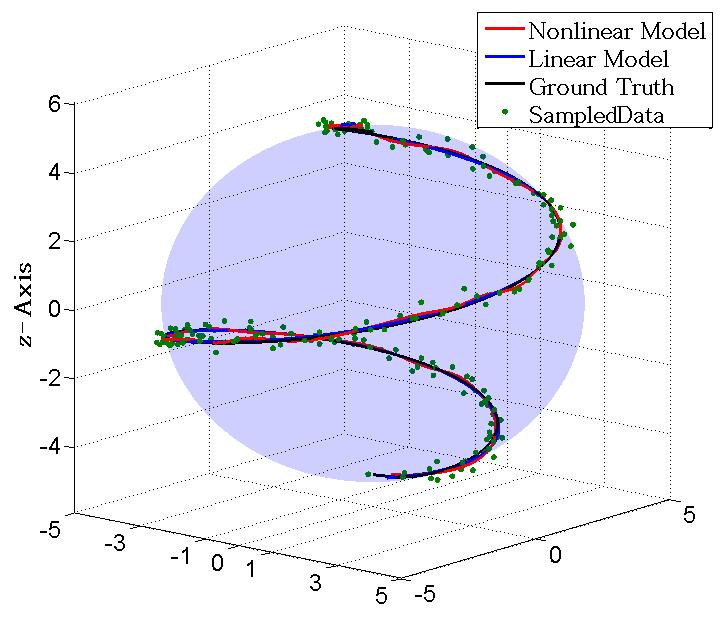

Physics-informed Machine Learning
In a variety of settings, especially in physical systems, wherein laws of physics are primarily responsible for shaping the outcome, generalization in neural networks can be improved by leveraging underlying physics for designing the computation graphs. Our work on this topic leverages a generalization of the Hamiltonian dynamics to develop a learning framework that uncover continuous dynamics from discrete observations in a data-effcient and transparent manner.
Decentralized Control for Collective Robotics
Studies on the group behavior of European starling flocks have revealed that the individuals in a group tend to fly parallel to one another in a very cohesive manner. Building on the insights gained from these studies, we proposed topological velocity alignment, a decentralized control algorithm designed to drive a group of individuals in the same direction through local interaction between neighbors. We designed the feedback control law in such a way that it does not require the individual speeds to be equal, and hence one can apply this control algorithm to drive a group of heterogeneous robots (for example, a fleet of autonomous boats, or a group of unmanned aerial vehicles) from one place to another. Moreover, this proposed control algorithm has wave equation like aspects which enable the group to maneuver in a fast and more efficient way.
Another related line of my research (in collaboration with Dr. Kevin Galloway) studies a modified version of a constant bearing pursuit strategy under a cyclic attention graph, wherein each agent pays attention to the next agent and a beacon (which can be a high value target in an surveillance-reconnaissance mission, or the eye of a hurricane during atmospheric measurements). In this modified framework, one can obtain a wide variety of motion patterns by appropriate choice of only a handful of control parameters. Our research has shown that this system admits shape equilibria with collective circling of the agents around the beacon, and the circling radius and distribution of the agents on the circle can be determined by tuning parameters in the feedback law. In a more recent work along this line, we have shown the existence of a family of invariant manifolds related to spiral motions which maintain the formation shape up to geometric similarity. This formulation provides a method to design a wide variety of motion paths in a collective of autonomous robots, with emergence built upon simple dyadic interactions between neighboring agents in a cycle graph.
Many practical problems demand intelligent control algorithms to drive a group of autonomous robots towards some region of interest, and upon arrival switch to a suitable pattern for collaborative task execution, for example, search and rescue, surveillance, precision agriculture. Our results for synthesizing collective motion have direct relevance and potential applications in these situations, and may also provide some insight into modeling explore-exploit trade-offs observed in the foraging behavior of animal collectives.
Synchronization in Oscillator Networks
Investigation of synchronization phenomena in networks of coupled nonlinear oscillators plays a pivotal role in understanding the behavior of biological and mechanical systems with oscillatory properties, power system networks, and diverse other problems. In biological neuronal networks, synchronization can be beneficial, allowing for production of complex behavior, or detrimental, causing disorders such as Parkinson's disease and epilepsy. A principled understanding of synchronization and related behavior in complex interconnected oscillatory systems is a necessary first step towards designing control for enhancement of desired dynamics and suppression of undesired dynamics.
|

By adopting an agent-based approach, we investigated synchronous firing patterns in networks of FitzHugh-Nagumo (FN) oscillators coupled through gap junctions. Our initial results, based on nonsmooth Lyapunov analysis, provide a sufficient condition for synchronization in an all-to-all network of homogeneous oscillators. Then, by extending these results to arbitrary undirected graphs, we derived a sufficient condition in terms of the second smallest eigenvalue of the coupling matrix, and investigated cluster synchronization under non-identical external inputs. Our next focus is to develop a formalism to reduce a network of FN oscillators, while maintaining the salient properties of the original system. |
Human Inspired Design of Neural Network Architectures
|  In collaboration with Princeton Neuroscience Institute and Intel Corporation, I am investigating the effects of network topology on the parallel processing capability of neural network architectures. A key feature of neural network architectures is their ability to support the simultaneous interaction among large numbers of processes in the learning and processing of representations. The question of how the richness of such interactions trades off against the ability of a network to simultaneously carry out multiple independent processes - a salient limitation in many domains of human cognition - remains largely unexplored. Based on the assumption that multitasking constraints arise from shared representations between individual tasks, we introduced a graph-theoretic approach to address this question. Our analytical findings validate previous numerical work, showing that even modest amounts of interaction among processes induce dramatic constraints on the parallel processing capability of a network architecture. In addition to providing useful tools for empirical studies of controlled vs. automatic processing and multitasking performance in humans, the analytical methods developed in this work are also being exploited to study and design neural networks, which can strike a balance between representational efficiency and parallel processing capability. |
Analysis of Collective Behavior in Biological Settings
Numerous examples of collective behavior evidenced in biological settings suggest that the related interaction mechanisms can actually serve as the repertoire for designing collaborations of autonomous agents, and that necessitates investigation of the underlying flight strategies and feedback control laws behind collective motions observed in nature.
Equipped with appropriate algorithms for data smoothing and trajectory reconstruction, we performed flight data analysis of big brown bats (Eptesicus fuscus) in two different contexts (in collaboration with Batlab at UMD). This analysis has shown quantitative evidence in favor of a context-specific switch in flight strategy. According to our findings bats apply constant absolute target direction (CATD), also known as motion camouflage (MC) in the context of visual insects, while chasing a free flying insect (praying mantis in our study). But if the scenario is modified into a competitive setting with another bat foraging for a single stationary food source (meal-worm in this study), the flight data show evidence that the trailing bat resort to classical pursuit (CP) to follow the other bat. Moreover, by comparing empirically observed curvature values with the ones obtained from theoretically plausible feedback laws, this study sheds light upon the steering control mechanisms. Our analysis also yields an estimate for the sensorimotor delay associated with the foraging behavior. This approach towards uncovering the governing mechanism (of pursuit, collective motion) can easily be used to explore flight strategies and steering control laws for collective motion in other species (starling flocks, fish schools).
In an ongoing collaboration with COBBS Group at the Institute for Complex Systems (ISC-CNR) we are trying to understand the mechanism governing the spectacular aerial displays by flocks of european starlings (Sturnus vulgaris). By assuming individual starlings as point particles we are working towards developing a theoretical model for flocking. Trajectory data analysis has revealed that the individuals fly parallel to each other and the flock-averaged coherence (the average cosine of the angle between the velocities of a focal bird and its neighborhood center of mass, averaged over the entire flock) gets maximized by considering 5-7 nearest neighbors.
Feedback-Controlled Bifurcation in Evolutionary Dynamics
|
 Evolutionary dynamics provides a set of powerful tools to model and analyze how the fractions of a population committed to different strategies evolve over time (e.g. evolution of language grammars, population genetics in biology etc.). In particular, the replicator-mutator dynamics model this evolution as a function of replication (commitment to strategies with higher rewards/pay-offs) and mutation (tendency for spontaneous switch among strategies). Depending on the rate of mutation and strategy interaction network, steady-state system-level behavior can be classified into three types: (i) dominance of a single strategy, (ii) coexistence of a few strategies, and (iii) collapse of dominance. High mutation rate leads to collapse of dominance, i.e., the mixed equilibrium of equal representation of strategies, whereas low mutation rate results in a single dominant strategy. However, whether the population fractions themselves exert any influence on tuning the rate of mutation is yet to be explored. While collaborating with the Dance Program at Princeton University on understanding the process of social decision-making in a structured improvisational dance context, we noticed some evidence of population fractions' influence on the switching rates between strategies. This motivated us to introduce a feedback loop into the well-studied framework of replicator-mutator dynamics. Then, by carrying out a feedback controlled bifurcation analysis, we have demonstrated that this modification can yield persistence of dominant strategies (as observed in the data). Furthermore, by introducing nonlinearities into the underlying pay-off structure, we have shown that our proposed framework can emulate oscillatory behavior even when only two strategies are interacting with each other. |
Control Theoretic Data Smoothing
Exploration and development of models for collective behavior in biological setting rely heavily on data analysis, which in turn involves smoothing and reconstruction of a continuous time signal from discrete, noisy observations. However, many such, possibly non-denumerable, reconstructions may be consistent with the discrete measurements. In this sense, this inverse problem is ill-posed, and we tackle it by the method of regularization. By introducing generative models with inputs, states and outputs, we regularize this problem by trading total fit-error against suitable penalty functionals of input and state. Our framework also optimizes the trade-off between goodness of fit and smoothness of reconstruction by adopting a cross-validation approach.
|  For example, in order to investigate the feedback mechanisms underlying collective motion in natural settings (e.g. self-organized aerial displays by starling flocks, pursuit events in echolocating bats etc.), we are required to extract velocity and its higher order derivatives from a finite sample of observed positions. We introduced a simple linear triple-integrator as the underlying generative model for trajectories. Then, by penalizing high values of the jerk (i.e. the derivative of acceleration) path integral, we constructed an explicit solution using techniques from linear quadratic optimal control. The resulting smoothing algorithm is fast, with complexity of the order of sample size. Our subsequent work considers a more general nonlinear generative model, and yields solution in a semi-analytical way by using a modified version of Pontryagin's maximum principle. Then by extending our results to problems with generative models on finite dimensional matrix Lie groups, we have shown that analytical solutions can be obtained in terms of Jacobi elliptic functions for data smoothing problems on SE(2). Although our usage of these control theoretic data smoothing techniques have been limited to trajectory reconstruction, these algorithms can be used to recover continuous time signals from a set of discrete measurements in other areas of science and engineering as well. Furthermore, this framework can also be exploited to address way-point tracking problems - if the objective is to optimize some relevant path cost, by sacrificing exactness in its way-point traversal, that problem can easily be addressed in this framework. |
Matlab Codes:
Click here to download the zip file of MATLAB codes (MAIN_code_4_Reconstruction.m +
Ord_Crss_Validation.m + Linear_Filter.m and README file). These codes implement the reconstruction algorithm proposed in our paper
Trajectory Smoothing as
a Linear Optimal Control Problem. Moreover these codes are customized to leverage the parallelism of ordinary
cross validation.